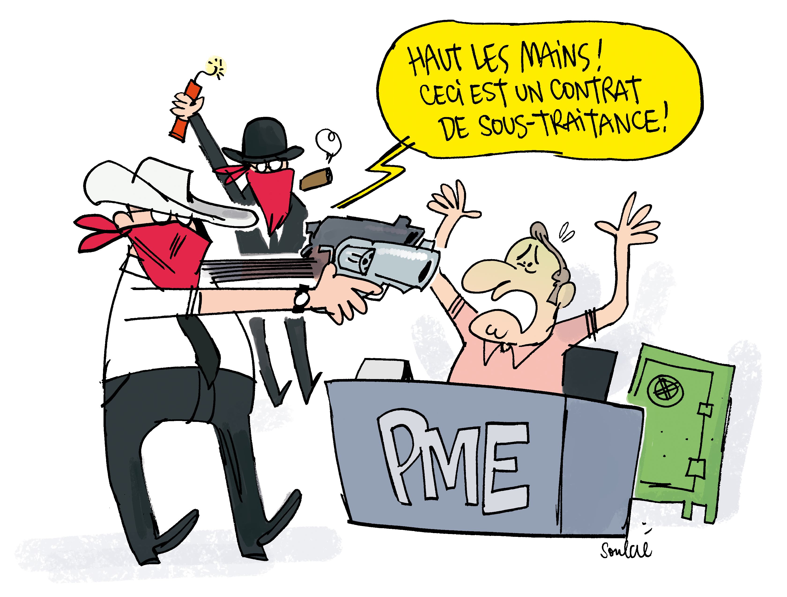

Comment je vais faire pour assumer une masse salariale en hausse avec l'augmentation du SMIC alors que j'ai du mal à payer les salaires actuels ?
Il y a plusieurs aspects qui vont permettre de soulager les petites entreprises pour qu'elles puissent faire face à l'augmentation de la masse salariale. L'objectif est de soutenir ces entreprises si chères à notre tissu entrepreneurial français.
Améliorations fiscales
Le principal aspect est une mesure forte et à très court terme qui consiste en une refonte de l'Impôt sur les Sociétés (IS) pour "établir l'égalité devant l'impôt entre PME et grands groupes", avec un "barème progressif" pour "favoriser l'investissement plutôt que la distribution de dividendes". Concrètement, cet impôt va baisser : Le taux, qui est actuellement à un tiers des bénéfices (33,33%), passera à 25%. Cet appel d'air permettra à ces entreprises de consolider leur trésorerie, et d'aider immédiatement les entreprises concernées.
Au niveau fiscal aussi, les entreprises qui réinvestissent en France seront soutenues, puisqu'elles paieront moins d'impôts, au détriment de celles qui favorisent la rémunération de leurs actionnaires.
Soutien aux PME et aux sous-traitants
Le soutien aux PME se fera surtout à travers la création d'un fond de solidarité inter-entreprises. Ce fond sera alimenté par les contributions des entreprises de manière proportionnelle. De telle sorte que les petites entreprises ne paieront presque rien et que la majorité du fond sera alimentée par les grosses entreprises du pays. Les PME étant très souvent sous-traitantes des multi-nationales, la création de ce fond permettra de soulager les PME et d'assurer la solidarité financière entre donneurs d'ordre et sous-traitants.
Les sous-traitants seront aussi soutenus, puisque les donneurs d'ordres auront plus de responsabilité au niveau juridique, pour "stabiliser le remplissage des carnets de commande, et soulager les sous-traitants de responsabilités auxquels ils ne sont parfois pas à même de répondre seuls". Les délais de paiement des sous-traitants seront raccourcis .
Facilité bancaire et soutien à l'investissement
Le prêts à taux zéro permettra aussi d'améliorer la trésorerie des PME, qui leur permettra de payer leurs factures, sans payer de frais bancaires. Ce prêt sera possible par la création d'un pôle bancaire public, qui facilitera le crédit aux entreprises, en particulier dans celles qui investissent de manière écologique.
Relance de l'activité des PME par la hausse de la demande et l'investissement public
L'autre aspect important est que les PME devraient voir leurs carnet de commande se remplir au bout de quelque temps. La mise en place de la garantie dignité , la hausse du SMIC, la hausse des salaires des fonctionnaires, la limitation des salaires sur une échelle de 1 à 20, qui ne devrait concerner essentiellement que les grandes entreprises, la refonte de l'impôt sur le revenu pour soulager les classes moyennes, toutes ces mesures vont permettre d'augmenter le pouvoir d'achat des catégories les plus pauvres. Celles-ci consacrant une plus grande part de leurs revenus à la consommation, cela devrait permettre de remplir les carnets de commande. L'autre moyen de relancer la demande est le plan d'investissement de 100 milliards d'euros prévu (lien vers le texte sur le plan de relance). Par exemple, à travers le "plan zéro obstacles" de 10 milliards d'euros, pour l'accessibilité des lieux publics, le carnet de commande de nombreuses PME locales devrait se remplir.